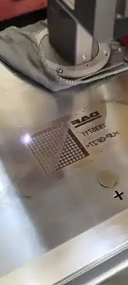
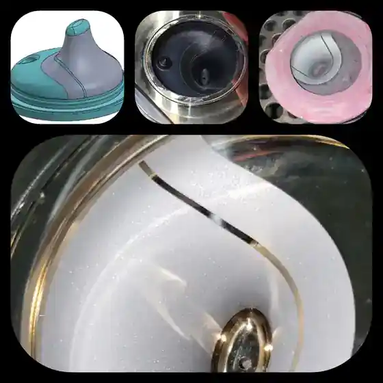

Projeto e execução de moldes
Suporte ao desenvolvimento, análise de parâmetros e acompanhamento técnico de moldes novos.
Manutenção, otimização, usinagem, texturização química, gravação e solda laser, polimento técnico e tratamentos superficiais em uma operação conectada à realidade da produção.

Uma atuação ampla em ferramentaria, manutenção, usinagem, textura, laser e polimento para reduzir interfaces e acelerar a solução.
Suporte ao desenvolvimento, análise de parâmetros e acompanhamento técnico de moldes novos.
Modificações e componentes com processos como CNC, eletroerosão e retífica, conforme a necessidade do projeto.
Manutenção preventiva, preditiva e corretiva para reduzir paradas e recuperar desempenho.
Padrões simples ou múltiplos, desenvolvidos a partir de referência, amostra ou especificação.
Logotipos, letras, identificações e reparos localizados com controle e precisão.
Preparação e recuperação de superfícies conforme requisitos funcionais e de aparência.
Substituímos imagens genéricas por registros reais encontrados na pasta de mídia da empresa.

Identificações e detalhes aplicados com precisão em superfícies metálicas.
Padrões voltados à aparência, ao toque e à repetibilidade da peça injetada.

Intervenções para recuperar componentes e devolver funcionalidade ao ferramental.
A Brasil Tools combina experiência prática em moldes com processos especializados de superfície, buscando reduzir paradas, melhorar acabamento e devolver o ferramental à produção com segurança.
Parte do conhecimento já documentado pela empresa foi transformada em conteúdo útil para projeto, ferramentaria e desenvolvimento de produto.
O projeto da peça e da ferramenta deve considerar a textura e o ângulo de saída desde o início para favorecer a extração sem danificar a aparência.
Marcas de eletroerosão, diferenças de dureza e soldas na área visível podem alterar o resultado. Padrões mais finos exigem preparação superior.
Quando uma peça precisa combinar com outra já texturizada, amostras físicas ajudam a mapear áreas, profundidades e quebras de brilho.
Fotos, desenho, sintomas e histórico ajudam a entender urgência e condição do ferramental.
Definição de escopo, processo, sequência de trabalho e critérios de aceitação.
Manutenção, usinagem, laser, textura ou polimento conforme a solução definida.
Revisão final antes do retorno do ferramental ao processo produtivo.
Fotos, desenho, material da peça, acabamento desejado e prazo ajudam nossa equipe a direcionar rapidamente a solução técnica.